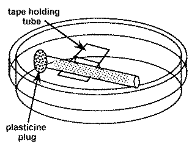
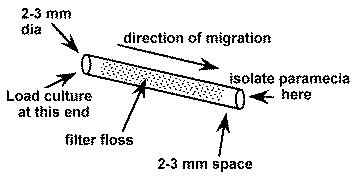
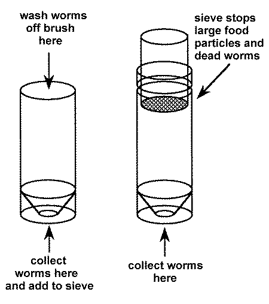
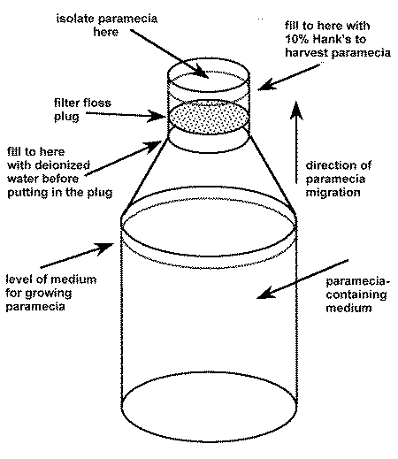
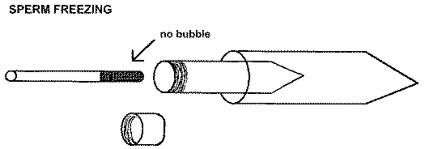

NEW EDITION OF THE ZEBRAFISH BOOK PLANNED
The Zebrafish Book is out of print. The last copies of the first edition, which was published in 1989, have been sent out. Rather than printing more of this original edition, a new expanded edition is planned.
Specifically, the new edition will include a more comprehensive developmental staging series, newly developed molecular methods, more detailed methods for embryo production, and an index. There are also a number of mistakes in the original version which need to be corrected.
Although a specific date has not been set for publication, the zebrafish community is encouraged
to contribute new methods, updates, corrections, etc. as soon as possible. Contributions can be
sent directly to M. Westerfield in Eugene by regular or e-mail.
******************************************************************************
By Bill Trevarrow
Contamination is a recurrent problem with paramecia cultures. Here is a simple technique that allows the isolation of paramecia or other motile micro-organisms from contaminating non-motile or more slowly moving organisms in the culture.
1. Prepare a number of small diameter glass tubes (about 5 cm long and 2-3 mm inside diameter) that are filled with loosely compacted glass floss. The floss should be inserted 3-5 mm in from each end (see below). To insert it, cut a strip about 2-3 mm wide and about 5 cm long and draw through the tube with a wire hook or tubing with a notch in it.
2. Sterilize the tubes.
3. Suspend a sterile floss containing the tube in a sterile 60 mm petri plate with a piece of tape. The tape does not need to be sterile. Avoid touching the ends of the tube.
4. Using a sterile pipette tip, add sterile 10% Hanks (recipe in the Zebrafish Book) to one end of the tube. Leave room (about 2-3 mm) in the end of the tube for the addition of the impure paramecia culture .
5. Add a droplet of the impure paramecia culture to the same end of the tube filling the 2-3 mm space.
6. Occlude the culture containing end of the tube with a small piece of modeling clay (e.g. Plasticine).
7. Wait a few hours and the paramecia will appear at the open end of the tube where they are observable with a dissecting microscope and can be isolated with a sterile pipet tip. Do not wait too long or other slower moving organisms may catch up.
8. Add the isolated paramecia to a sterile culture and no other organisms should be present.


******************************************************************************
By Nigel Holder
This year's British Society for Developmental Biology symposium will be held in Brighton at the University of Sussex, April 7-10, 1992. The main meeting is on Gastrulation (organized by Claudio Stern) and has lots of talks of general interest to zebrafish people and includes a presentation by Robert Ho.
On Thursday, April 9, Peter Thorogood and Nigel Holder have organized a one-day workshop on teleost development. The confirmed speakers will be Anders Fjose, Tromso; Trevor Jowett, Newcastle; Chuck Kimmel, Eugene; Norman McLean, Southampton; Stefan Schulte, Tübingen; Uwe Strähle, Oxford; Lucy Timmermans, Wageningen; Juergen Vielkind, Vancouver; and Steve Wilson, London. The workshop covers various aspects of current work on fish embryos and speakers have been asked to discuss their research strategy as well as recent data.
Brighton is very pleasant in Spring, so come along if you can and add to the breadth of discussion and expertise. In addition to these major attractions, the sister cell biology society is holding a large symposium on transcription factors organized by Peter Rigby and Robb Krumlauf. Again, there is a great deal of interest for developmental biologists in the program.
******************************************************************************
An over whelming number of readers have written or called extolling the Monitor's virtues. That's nice, good for the ego, and helps keep us going.
But on the other hand, very few of you have contributed anything. If this 'experiment' in communication is going to work, we need some communication.
We need fuel for the fire like your methods, ideas, preliminary results, and preprints. How about sending them? Look, it's not so tough, just grab them off that stack of papers at the back of your desk and drop them into the mail.
Oh, and don't forget the Zebrafish bulletin board! More and more of you are using it to access the updated edition of the Zebrafish Book, back issues of the Monitor, the literature reference list, the user list, etc. You can dial (503) 346-4951 for on-line access or email: 'zebrafish@uoneuro.uoregon.edu'.
******************************************************************************
By Bill Trevarrow
Microworms are a live food that some labs are using instead of brine shrimp. Here is a method
for raising microworms adapted from techniques used in fly labs.
You will need:
* Clean plastic boxes with snap on lids (Tupperware-like)
* Oatmeal (rolled oats or porridge)
* A spoon for stirring the oatmeal
* Deionized water
* 10% methyl-p-hydroxybenzoate (also known as Tegosept or NipaginM, fungus inhibitor) in 95% EtOH
* A productive strain of micro worms (commercially available through hobbyist magazines)
* A clean Pasteur pipet
* A clean, long handled paint brush with a brush approximately 1 x 2.5 cm
* Two 50 ml plastic 'Falcon'-like tubes and a sieve that fits into the top of one of the tubes
2. Soak the oatmeal for about 5-10 minutes, then boil in a double boiler for about 5-10 minutes (until the oatmeal is evenly thick from the top to the bottom).
3. Remove the oatmeal from the heat and add 2.8 ml of 10% methyl-p-hydroxybenzoate in 95% EtOH for every 400 ml of oatmeal mixture, to yield a final concentration of 0.07%. Stir and pour into the clean plastic boxes. After the mixture cools, add an aliquot of microworms.
5. Check the new cultures in about a week for worms. They should be climbing out of the culture onto the sides of the container or squirming visibly in the culture medium. Some cultures may take longer to produce a good crop of worms. If they do not produce worms by the second week, rinse and bleach the containers before reusing. Old cultures which no longer produce worms should be discarded and the containers washed and bleached before reuse.

2. Fill one of the 50 ml tubes with approximately 20 ml of water.
3. Wet the brush in deionized water and use it to wipe worms off the top of a culture. Swish the brush in the water in the 50 ml tube until the worms fall off.
4. Repeat until enough worms are obtained or until the top is devoid of worms. If more worms are needed, wipe them from the sides of the box or from a new box.
5. Dump the worms that have been collected in the tube onto the sieve on top of the other tube.
6. Add more water to the first tube and wash remaining worms onto the sieve.
7. Fill the second tube with additional water until the level just reaches the bottom of the sieve. Live worms will wiggle through the sieve into the water, dead worms and pieces of food are retained and should be discarded.
8. Let the live worms settle to the bottom (5-15 min).
9. Remove the worms from the bottom of the tube with a Pasteur pipet and transfer to a small tube for distribution to the fish tanks.
10. Live worms can be maintained for extended periods of time in the large or small tubes without any problems.
******************************************************************************
******************************************************************************
by Bill Trevarrow
Within a few days after hatching, zebrafish larvae use up their yolk supply and need to be fed live
food. Most labs find that paramecia are a good food source. Here is a method for raising
paramecia.
* Narrow necked clear glass bottles (500 ml tissue culture media bottles will do)
* Liquid Fry (available through pet shops)
* Wads of nylon filter wool
* A disposable syringe (10 or 20 ml)
* A productive healthy strain of paramecia (Connecticut Valley, Carolina Biological, etc.)

2. Sterilize the bottles.
3. Add several drops of liquid fry to each bottle (3 to 10 drops per 500 ml).
4. Add paramecia (about 1/4 to 1/8 of an aliquot per 500 ml). The culture will clear as the
paramecia multiply, leaving mostly paramecia, flocculate material, and debris on the bottom. The
paramecia can be seen as small specks. A dissecting scope can be used to ensure that the cultures
are growing.
2. Add some water soluble vitamins to enhance the nutritional value of the paramecia a few hours before harvesting. They will absorb them directly from the medium.
3. If necessary, add deionized water to bring the fluid level up to the narrow part of the neck of the bottle.
4. Press a wad of nylon filter wool into the neck until it is beneath the surface of the water. Make sure no bubbles, which could block the passage of paramecia upwards, are trapped under the wool.
5. Fill the bottle to its top with sterile 10% Hank's saline or sterile fish water.
6. After a few hours, the paramecia will migrate up through the filter floss towards the air/water interface and into the small volume of clean 10% Hank's.
7. Remove the paramecia with a syringe or pour off and feed directly to the baby fish.
******************************************************************************
By Chuck Kimmel
Naming conventions are useful at least for the sake of clarity. The time is ripe for us to begin procedures to establish and adopt a standard nomenclature for zebrafish genetics that would be, must be, used by all of us. I propose we establish an ongoing committee to suggest guidelines for nomenclature.
As an interim committee to set this in motion, I would like to be joined by Anders Fjose, Davy Grunwald, Jannie Nusslein-Volhard, Monte Westerfield, and others among you who have particular interest in the issue. Those of you who have ideas about gene naming should communicate with one or more of us. The interim committee will gather ideas and suggest a specific initial proposal to be published in the Monitor, and perhaps to be formally adopted or modified at a first zebrafish scientific meeting which the whole community would be encouraged to attend.
Streisinger adapted conventions originally established for C. elegans (see Horvitz et al., Mol. Gene. Genet. 175, 129, 1979) to name zebrafish genes identified by mutations. Fjose, Westerfield, and I suggested extending these conventions to include genes identified by molecular methods (see appendix in Njolstad et al., EMBO J. 9, 515, 1990)
Consider the names gol-1(b1) and hox-2.1[zf-21]. In both cases the part outside of the parentheses or brackets, a unique and uniform 3 letter-hyphen-number, indicates a gene. Genes identified by mutation are named according to their phenotypes (gol for "golden"), and here the hox signifies the molecular structure of the gene as it does in the mouse. Parentheses or brackets mean we are dealing, respectively, with mutations or DNA clones. Inside the parentheses is a unique catalogue listing of a specific mutant allele, and inside the brackets is a unique catalog listing of the clone.
Although there are other details, this is a summary of where we now stand. At the very least, we will need to extend the conventions to name chromosomal rearrangements, transgenes, and molecular markers where no gene may be involved. We also may want to change the present system. For example, the hyphen-number should perhaps not be a required part of a gene name. In C. elegans, genes identified by mutant phenotypes that are superficially similar acquire misleadingly similar names, and the list of numbers after the hyphen gets unwieldy. It thus might serve us well to consider renaming gol-1 and gol-2 to something like gol and yel (for "yellow"). We welcome your input.
******************************************************************************
By Charlene Walker
Sperm may be frozen and thawed later for in vitro fertilization. This method is well suited for
"backing up" genetic stocks against accidental loss or for reducing the number of tanks used to
house different lines. Here is an updated version (based on the method outlined in The Zebrafish
Book, page 6.5).
2. Collect sperm in a labeled 10 µl glass capillary, being careful to exclude bubbles (i.e. use very gentle suction).
3. Mix sperm thoroughly with a 5x volume of freezing medium (see "Recipes" in The Zebrafish Book) being careful to avoid air bubbles.
3a. A simple way to do this is to mark the capillary at the end of the sperm droplet and measure the amount of sperm in mm.
3b. Make a second mark on the capillary at 6x mm.
3c. Draw freezing medium into the capillary with the sperm up to the second mark.
3d. Carefully expel most of the sperm mixture onto a clean watch glass and draw back 2 times to mix sperm and freezing medium. Work quickly, being careful not to introduce bubbles.

4. Draw the mixture into the capillary, transfer the capillary into a 7 ml screw cap tube and put that tube into a 15 ml plastic conical centrifuge tube. Quickly plunge the whole works into dry ice for 20 minutes. This configuration provides the proper freezing rate.
5. After 20 minutes, remove the capillary from the screw cap tube and immerse in liquid nitrogen.
6. The capillary can be stored for years open ended in a test tube on a wand in a liquid nitrogen
freezer.
2. Place a 70 µl droplet of ice-cold 10% Hank's saline (recipe in Zebrafish Book) next to the eggs on the petri dish. 3. Remove the capillary from the liquid nitrogen and thaw for a few seconds in air.
4. Expel the sperm into the droplet of 10% Hank's saline with gentle pressure, mix gently, and then mix with the eggs.
5. Let sit ½-1 minute, then add 0.75 ml fish water and let it sit another 2 minutes.
6. Add more water to bring the solution level up to about half the volume of the petri dish.
The above recipe assumes an average of 10-11 mm of sperm. To calculate the amount of thawing medium needed for different amounts of sperm:
a. Measure the mm of sperm + freezing medium (sm) in the capillary.
b. Convert to volume:
10µl (cap. vol.) x mm sm = vol (µl)
90 mm (cap. length) 1
c. Multiply the calculated volume x 10 and use that much 10% Hank's saline for thawing.